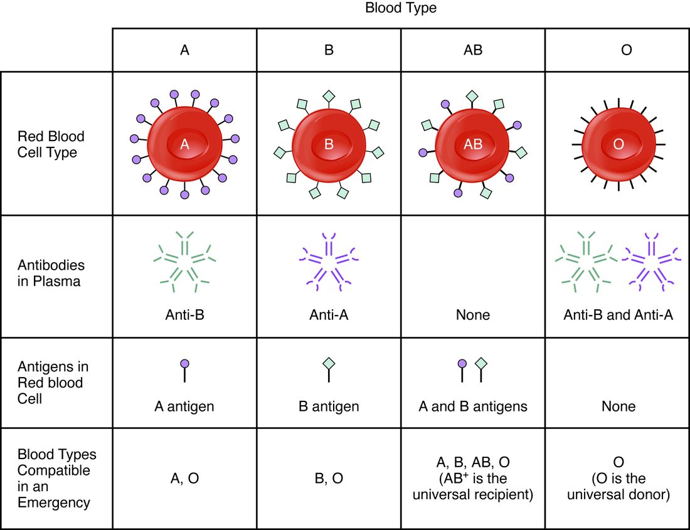

Before anyone receives a unit of blood, a lab checks two things about the donor's red cells and the patient's plasma. This page explains ABO blood types and the Rh factor: the antigens on red cells, the antibodies in plasma, what agglutination is and how a typing test reads it, which blood types can be given to whom, what happens in a transfusion reaction, and how Rh antibodies cause hemolytic disease of the newborn and how it is prevented.
Blood group antigens
You met the glycocalyx as the coat of sugar chains on a cell's surface, attached to membrane proteins and lipids. On a red blood cell, some of those sugar chains and proteins differ from person to person. Each difference that another person's immune system can recognize is a blood group antigen. More than 40 blood group systems are known, but two matter most for transfusion, because the antibodies against them are common and act fast: ABO and Rh.
ABO blood groups
Nearly everyone's red cells carry a short sugar chain called the H antigen. What happens next depends on which version of one gene you inherited. The gene codes for an enzyme that adds one more sugar to the end of the H chain:
- The A version adds one kind of sugar, making the A antigen.
- The B version adds a slightly different sugar, making the B antigen.
- The O version makes an enzyme that does not work, so the H chain is left as it is.
Your ABO blood group, or blood type, is named for the antigens on your red cells (Figure 1):
- Type A: A antigens only.
- Type B: B antigens only.
- Type AB: both A and B antigens.
- Type O: neither A nor B antigen.

Inheriting a blood type
You inherit one copy of the ABO gene from each parent. An A or B copy makes its antigen whenever it is present, so a person with one A copy and one B copy makes both antigens and is type AB. An O copy makes nothing, so it only shows when both copies are O.
| Gene copies | AA or AO | BB or BO | AB | OO |
|---|---|---|---|---|
| Antigens on red cells | A | B | A and B | Neither |
| Blood type | A | B | AB | O |
So two type A parents can have a type O child, if each carries one O copy, but two type O parents cannot have a type A child.
Anti-A and anti-B antibodies
Here is the feature that makes ABO dangerous. By a few months of age, everyone has antibodies in their plasma against whichever of the A and B antigens their own red cells lack, without ever having received blood. The best explanation is that bacteria in the intestine and in food carry sugar chains that look like the A and B antigens. The immune system makes antibodies against those it sees as foreign; it does not make antibodies against antigens on its own cells.
| Type A | Type B | Type AB | Type O | |
|---|---|---|---|---|
| Antigens on red cells | A | B | A and B | None |
| Antibodies in plasma | Anti-B | Anti-A | None | Anti-A and anti-B |
The pattern is always the same: the plasma has antibodies against the ABO antigens the red cells do not have.
Agglutination
Mix a drop of type A blood with plasma from a type B person, and within seconds the red cells gather into visible clumps. This is agglutination (Latin agglutinare = to glue together): antibodies cross-linking cells into clumps.
- Each anti-A antibody has several binding sites, each able to bind an A antigen.
- One antibody binds A antigens on two different red cells, bridging them.
- Many such bridges link thousands of cells into clumps that can be seen without a microscope.
Agglutination is often followed by hemolysis (hemo- = blood, -lysis = breaking down): antibodies bound to the cells switch on other plasma proteins that punch holes in the red cell membranes, and the cells burst and release their hemoglobin.
Note the difference between agglutination and coagulation. Agglutination is antibodies clumping cells by their surface antigens. Coagulation is fibrin threads forming a clot. They can happen together in a transfusion reaction, but they are different processes.
Reading a typing test
A typing test puts drops of the patient's blood into three wells: one with anti-A antibodies, one with anti-B and one with anti-D (the Rh antigen, below). If the red cells carry the matching antigen, they agglutinate in that well (Figure 2).
Worked example 1: typing a sample
Problem. A patient's blood stays smooth in the anti-A well, clumps in the anti-B well and stays smooth in the anti-D well. What is the blood type, and which antibodies are in the plasma?
- Anti-A: no clumping. No A antigen on the red cells.
- Anti-B: clumping. B antigen present. The ABO type is B.
- Anti-D: no clumping. No D antigen: Rh negative.
- Plasma antibodies. Type B plasma holds anti-A. An Rh-negative person has anti-D only if they have been exposed to Rh-positive cells before.
Answer. B negative, with anti-A in the plasma.
The Rh factor
The Rh factor is the D antigen, a protein in the red cell membrane. It is named for the rhesus monkeys in which a related antigen was first studied. Whether you have it depends on another gene, inherited separately from ABO:
- Rh positive: red cells carry the D antigen. You need only one working copy of the gene. About 85% of people of European ancestry are Rh positive, and over 99% of people in many East Asian populations.
- Rh negative: red cells lack the D antigen, because both copies of the gene are missing or do not work.
The Rh blood group behaves differently from ABO in one crucial way. An Rh-negative person does not have anti-D antibodies until they are exposed to Rh-positive red cells, by a transfusion or by a pregnancy with an Rh-positive fetus. The first exposure makes the immune system start producing anti-D over weeks, too late to harm the cells that caused it. Once a person has been sensitized in this way, a second exposure produces a fast, strong attack on Rh-positive cells.
| ABO blood groups | Rh blood group | |
|---|---|---|
| Antigen | Sugar chains (A, B) at the end of the H antigen | The D protein in the membrane |
| Antibodies without any exposure? | Yes: against whichever of A and B you lack, from infancy | No: anti-D forms only after exposure to Rh-positive cells |
| First mismatched transfusion | Immediate reaction | Usually no reaction; the person becomes sensitized |
| Matters in pregnancy? | Occasionally, usually mildly | Yes: the main cause of severe hemolytic disease of the newborn |
Matching blood for a transfusion
One rule covers red cell transfusions: the donor's red cells must not carry an antigen that the recipient's plasma has, or will make, antibodies against. The donor's plasma matters much less, because most units are packed red cells with little plasma left, and any donor antibodies that remain are quickly diluted in the recipient's large plasma volume.
Worked example 2: can this patient receive this blood?
Problem. A type A negative patient needs red cells. The blood bank has type O negative, type A positive and type B negative units. Which can she receive?
- List her plasma antibodies. Type A: anti-B. Rh negative: no anti-D yet, but she will make it if she receives D antigen.
- O negative cells: no A, no B, no D. Nothing for her antibodies to bind. Safe.
- A positive cells: A antigen is fine, but D antigen would sensitize her. Avoid, especially in a woman who may later become pregnant.
- B negative cells: B antigen meets her anti-B at once. Dangerous.
Answer. O negative. (A negative would be the first choice if the bank had it.)
| Blood type | Antigens on red cells | Antibodies in plasma | Can receive red cells from | Share of people (US, about) |
|---|---|---|---|---|
| O negative | None | Anti-A, anti-B | O− | 7% |
| O positive | D | Anti-A, anti-B | O−, O+ | 37% |
| A negative | A | Anti-B | A−, O− | 6% |
| A positive | A, D | Anti-B | A−, A+, O−, O+ | 36% |
| B negative | B | Anti-A | B−, O− | 2% |
| B positive | B, D | Anti-A | B−, B+, O−, O+ | 8% |
| AB negative | A, B | None | All negative types | 1% |
| AB positive | A, B, D | None | All eight types | 3% |
Two names follow from the table:
- The universal donor is O negative: its red cells carry no A, B or D antigen, so they can be given to anyone in an emergency. Trauma teams carry O-negative units for this reason; O-positive units are often used for men, who cannot be harmed in a later pregnancy.
- The universal recipient is AB positive: its plasma has no anti-A, anti-B or anti-D, so it can receive red cells of any ABO and Rh type.
For plasma transfusions, the logic runs the other way: AB plasma holds no anti-A or anti-B, so it can be given to anyone, and O plasma only to type O.
Crossmatching
ABO and Rh are only two of many blood groups. Before a planned transfusion, the lab also screens the patient's plasma for antibodies against the other groups, and then performs a crossmatch (cross matching): it mixes the patient's plasma with red cells from the actual donor unit and checks for agglutination. If none appears, the unit is issued.
Transfusion reactions
A transfusion reaction is harm caused by a transfusion. The most dangerous kind happens when ABO-incompatible red cells are given, most often because of a labeling or identification error. The chain runs fast:
- The recipient's antibodies bind the donor's red cells within seconds.
- The donor cells agglutinate and burst inside the vessels, releasing their hemoglobin into the plasma.
- Free hemoglobin spills into the urine and turns it red or dark brown; its heme is converted to bilirubin, and jaundice can follow.
- The antibody attack releases chemical signals that cause fever, chills, back and chest pain, and a fall in blood pressure that can lead to shock.
- Material released from the burst cells can set off clotting throughout the circulation, and the kidneys can be damaged and fail.
The first step when a reaction is suspected is to stop the transfusion at once. Reactions against other blood groups are usually milder and can be delayed by days, as antibody levels rise.
Hemolytic disease of the newborn
Hemolytic disease of the newborn (HDN), also called hemolytic disease of the fetus and newborn, is the destruction of a fetus's red cells by its mother's antibodies. Its most severe form is caused by the Rh factor (Figure 3).

- The setup. An Rh-negative mother carries an Rh-positive fetus, which inherited a D gene from its father.
- First pregnancy. Fetal and maternal blood normally stay apart. At delivery, and sometimes after a miscarriage, bleeding or a procedure in pregnancy, some fetal red cells enter the mother's blood. Her immune system makes anti-D over the following weeks. The first baby is usually unharmed, because it has already been born.
- Next Rh-positive pregnancy. The mother's anti-D is of a kind that crosses from mother to fetus. It binds the fetus's red cells, which are destroyed.
- In the fetus. Destruction of red cells causes anemia. The fetal marrow and liver pour out immature, still-nucleated red cells (erythroblasts), which is why the disease was named erythroblastosis fetalis. Severe anemia makes the fetal heart work harder, and fluid can collect throughout the fetus's tissues.
- After birth. Before birth, the mother's liver clears the bilirubin. After birth, the baby's immature liver cannot keep up, and bilirubin climbs fast: severe jaundice, and a risk of brain damage.
Prevention and treatment
HDN from Rh is now largely preventable. An Rh-negative mother is given an injection of anti-D immune globulin (one brand is RhoGAM) at about 28 weeks of pregnancy and again within 72 hours of delivering an Rh-positive baby, and after any event in pregnancy that may mix the bloods. The injected anti-D clears any fetal Rh-positive cells from her blood before her own immune system responds to them, so she never starts making her own anti-D. The injected antibody is gone within a few months, so it does not harm later pregnancies. Once a mother has made her own anti-D, the injection no longer helps; affected fetuses can be given transfusions before birth, and newborns are treated with phototherapy or by replacing their blood.
ABO differences between mother and fetus are more common but usually cause only mild disease. Most anti-A and anti-B cannot reach the fetus, and fetal red cells carry the A and B antigens only weakly. A type O mother, whose plasma holds some anti-A and anti-B of the crossing kind, can have a mildly affected type A or B baby even in her first pregnancy.